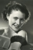

Country:United States, 68 minutes
Spoken languages:English
Genres:Horror, Mystery, Thriller, Comedy
Director(s):Christy Cabanne
Writer(s):Walter Abbott
Video Codec:Unknown
Number: 3072


Certification:NR
Storyline:
A woman is married to the son of a doctor, the proprietor of a private sanatorium, where she is under unwilling treatment. Both the son and the doctor indicate they want the marriage dissolved. Arriving at the scene is a mysterious personage identified as the doctor's brother who formerly was a stage magician in Europe. He is accompanied by a threatening dwarf...
Cast: 


Medium: Original DVD,
Comments: Part of: Horror Classics - 100 Movie Pack
Loaned: No
Aspect ratio: Unknown